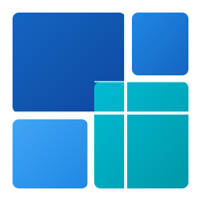
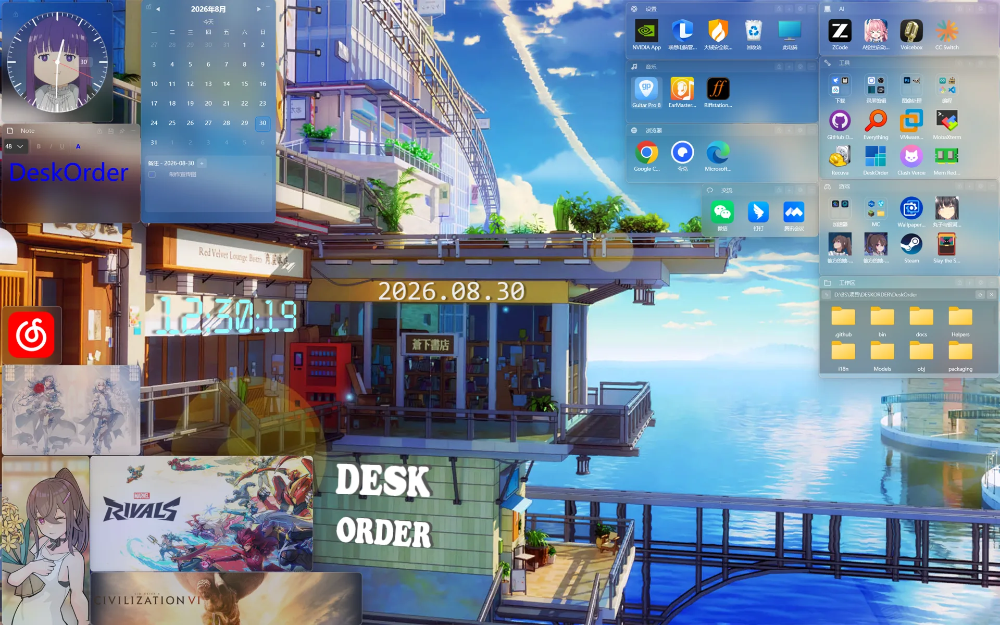
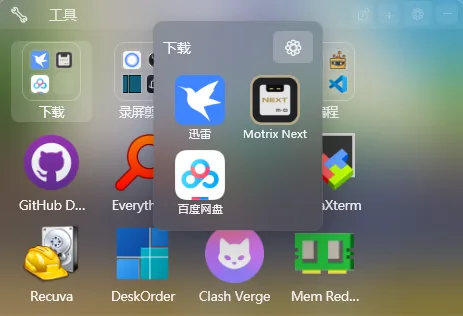
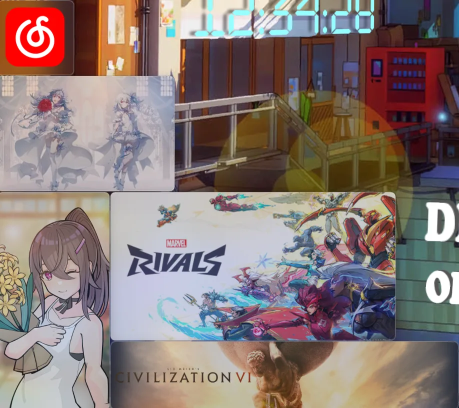
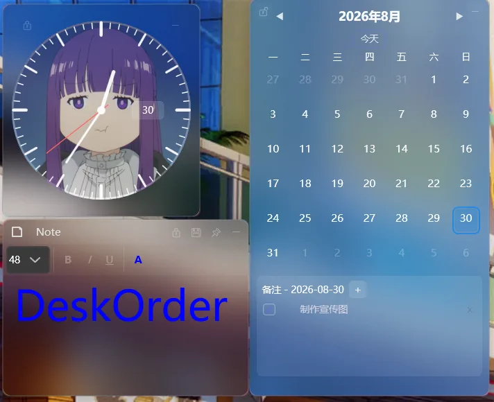
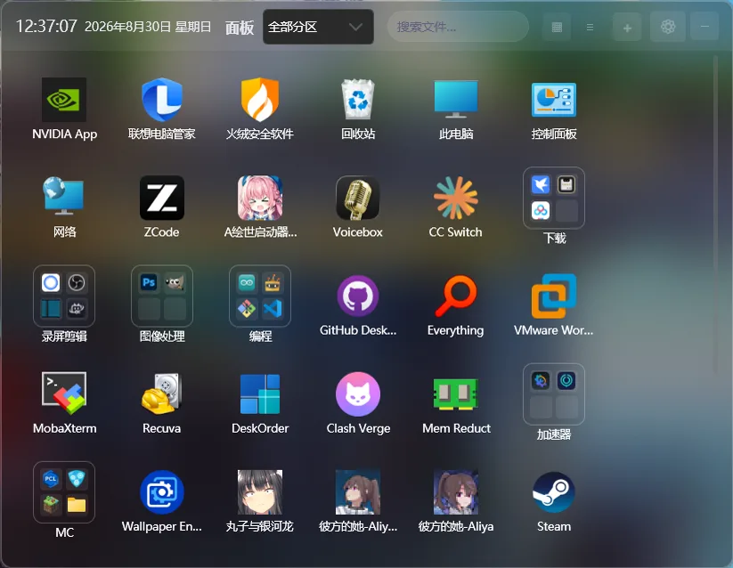
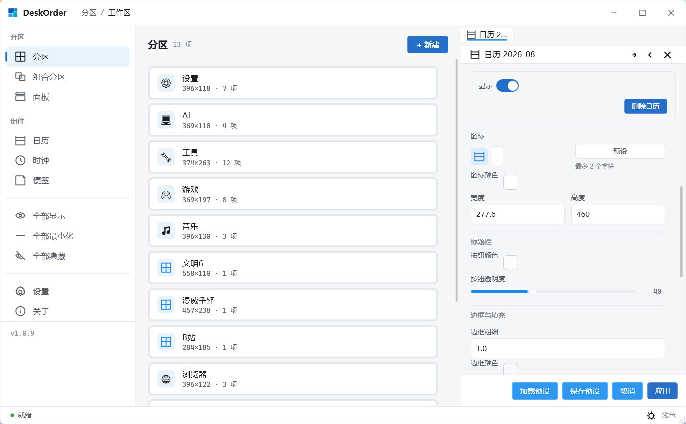

桌面分区
任意数量的透明悬浮分区，文件拖入即归类；网格或自由排列、吸附与自动重排，支持多显示器。

桌面分类管理和磁贴美化，一个软件全实现
用分区把图标收整齐，用磁贴、液态玻璃和挂件，把桌面排成你想要的样子。
Windows 10 及以上 · 自带运行时，无需安装 .NET

全部为软件实际运行截图。





从整理到美化，六大模块。
任意数量的透明悬浮分区，文件拖入即归类；网格或自由排列、吸附与自动重排，支持多显示器。
分区一键变磁贴，液态玻璃与背景图随心调；整套样式存成预设卡，其他分区一键套用。
时钟支持指针/数字与 12/24 小时制，日历待办到点托盘提醒，便签可绑定全局热键随时唤起。
全局热键呼出，分区卡片、文件搜索、新建文档与文件夹收在一处，弹出位置和动效可调。
多个分区组成一组统一管理，样式一起换。
分区驻留桌面层不挡应用；托盘、开机自启、中英双语、浅色/深色主题、应用内更新。
不用一边装整理工具、一边装美化工具，也不用来回同步两套配置。
从边框、填充到材质、动效，每个部分都能改；调满意的整套样式存成预设卡，一键套用到其他分区、面板、挂件。
图标只是文件路径的引用：不复制、不移动、不改名；删图标只是去掉引用，原文件还在原处。所有整理动作都不碰文件本体。
分区与挂件固定在壁纸之上、应用窗口之下，拖拽结束后自动回落。
图标提取、OLE 拖放、快捷方式解析。
内存缓存 + 原子写入，避免写坏配置文件。
i18n JSON 资源，界面语言切换即时生效。
内存与渲染做过专项优化。
配置全部存本地，不上传数据。
系统要求：Windows 10 及以上，64 位；自带运行时，不需要另外安装 .NET。
# 安装版
irm https://github.com/Three-Freezen/DeskOrder/releases/latest/download/DeskOrder-win-Setup.exe -OutFile DeskOrder-win-Setup.exe
# 或便携版
irm https://github.com/Three-Freezen/DeskOrder/releases/latest/download/DeskOrder-win-Portable.zip -OutFile DeskOrder-win-Portable.zip计划上架微软商店，发布后在此提供安装入口。
计划中的功能，发布顺序可能调整。